01
The starting point on the TV — account sign-in
The viewer starts on the television — sign in with a phone number, or skip and keep watching.
Loading experience
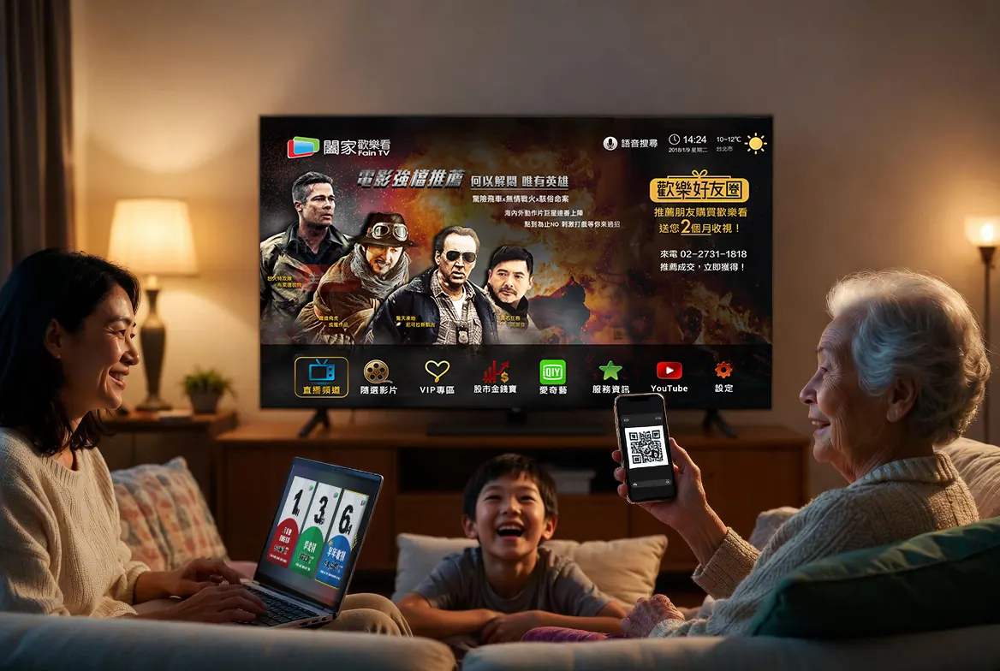
FainTV was the largest channel supplier for Chunghwa Telecom's MOD service. This project set out to consolidate that content into FainTV's own streaming platform and set-top box — moving from supplier to platform owner — with voice search and TV shopping as new features.
Years of supplying MOD meant the team already understood its audience well. MOD was therefore both the most direct competitor and the primary reference point.
As the sole UI/UX designer, I worked with three product managers and three engineers, covering research through to cross-screen flows and interface design.
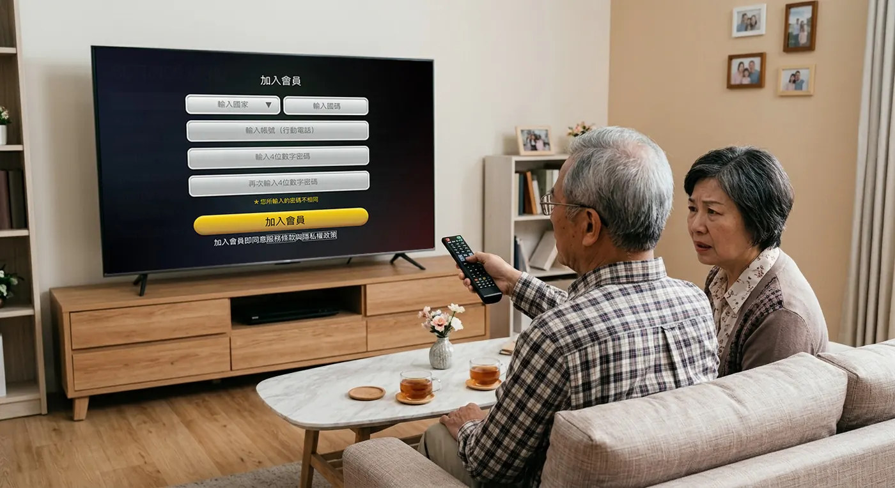
Entering Chinese characters on a television means navigating a grid with arrow keys, one stroke at a time. Typing a full name alone takes dozens of button presses — the single highest drop-off point in every round of testing.
The problem was never the user. It was the device they were using.
| Method | Purpose | Insight |
|---|---|---|
| Competitive analysis | Benchmarked primarily against Chunghwa Telecom's MOD — FainTV's own largest client, and the service our target users were already using. Netflix and similar pure-streaming platforms were reviewed but excluded from direct comparison: different audience, different interaction model. | MOD wins on price and brand trust, in a market with almost no comparable alternative. It does not win on experience. That gap is FainTV's opening. |
| Online survey (30+ responses) | Understand why users pay for a TV service, and how price and convenience weigh against traditional cable. | Purchase decisions clustered almost entirely around price and brand trust. Features and interface were rarely mentioned. |
| In-depth interviews (6) | Understand usage context and behaviour patterns — how older viewers actually operate a television at home, when they watch, and what they do when something goes wrong. | The viewer and the payer are not the same person. Older adults are the primary viewers, but entering personal details character-by-character with a remote is close to impossible. When they get stuck, they wait for their adult children — who, in most cases, do not live with them. |
| Contextual observation (~12 hrs, in users' homes) | Observe the real sequence of powering on, browsing channels, and shopping. | Users could add items to a cart without difficulty, but almost never completed checkout. Checkout requires personal details and a delivery address — too high a barrier on a D-pad. |
| Usability testing (hi-fi prototypes, TV / mobile / web) | Validate cross-screen flows and the new features. | Voice press-and-hold: 1s triggered accidentally, 3s felt right, at 5s users assumed the feature was broken, at 10s they had already moved on. Voice also required animated feedback — without a visual response, users had no way to confirm the system was listening. |
If the person paying isn't in front of the television, there is no reason for the transaction to stay there. This — not a platform assumption — determined the cross-screen architecture.
Chin-Shui Chen, 68
Retired factory supervisor
Typing on the remote is so slow he'd rather give up than finish a search.
Yi-Ting Chen, 38
Office worker — Chin-Shui's daughter, lives in another city
She pays for the service but is not the one watching it — and when something goes wrong, she is usually not in the room.
A mobile path was added to registration and subscription, because this was never something one person completed alone. Working across devices frees the flow from requiring both people to be in the same room — each finishes their part on the device already in their hand.
Low-input, high-immersion
Browse, watch, and confirm — no typing required
High-input, personal, on-hand
Type, pay, verify — familiar touchscreen input
Management & long-term records
Family, history, subscription control
Every task has to belong to a screen.
| Task | TV | Mobile | Web |
|---|---|---|---|
| Discovery & viewing | |||
| Browse content | Primary | — | — |
| Voice search | Primary | — | — |
| Discover product during broadcast | Primary | — | — |
| Confirm "I want this" | Primary | Supported | — |
| Account & checkout | |||
| Login / identity verification | — | Primary | Supported |
| Enter address & contact info | — | Primary | Supported |
| Payment & invoice details | — | Primary | Supported |
| Account management | |||
| View order history | — | Supported | Primary |
| Manage subscription | — | Supported | Primary |
"I don't design screens — I design which screen each task belongs on."
The viewer enters their child's phone number on the TV, or scans the QR code with their own. Either way, a link travels to a phone.
01
The starting point on the TV — account sign-in
The viewer starts on the television — sign in with a phone number, or skip and keep watching.
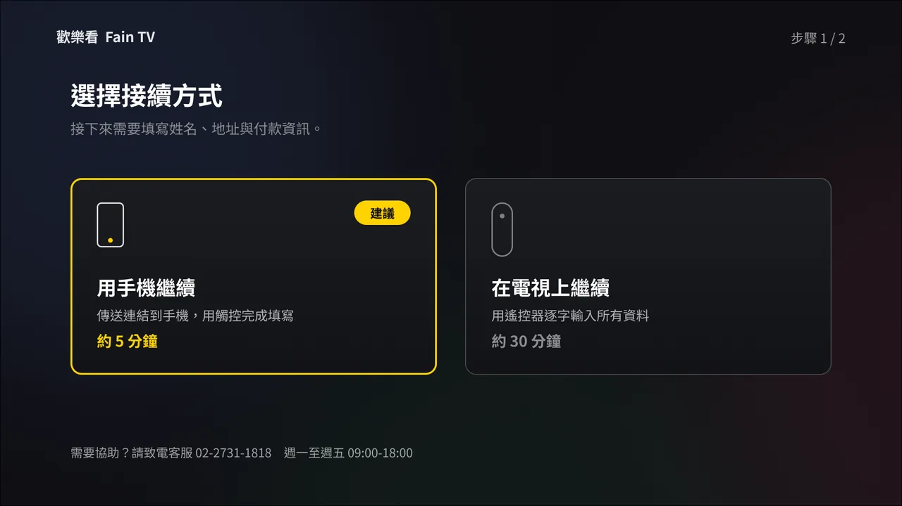
02
Choose how to continue
Choosing how to continue — the only two focusable elements on the screen
03
Send the link
Enter a phone number with the D-pad, or scan the QR code. This is the only text entry left on the television — and it is 10 digits, not 16.
04
Keep watching while you wait
Free content stays available. The viewer is not held on a waiting screen for something happening in another city.
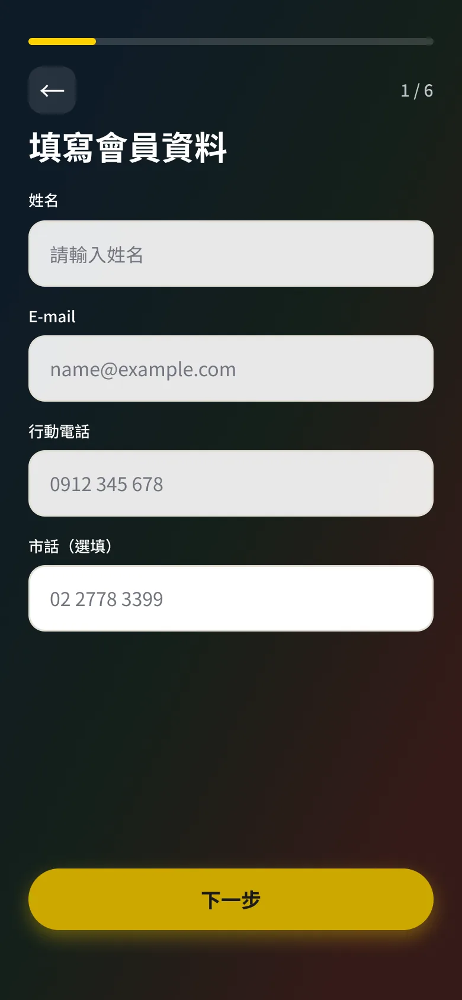
01
Member details
Name, email, and phone — typed on a familiar touchscreen.
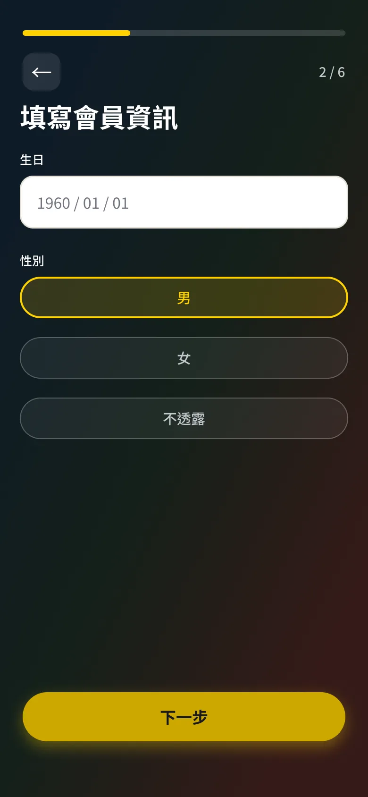
02
Personal information
Birthday and gender, without a D-pad.
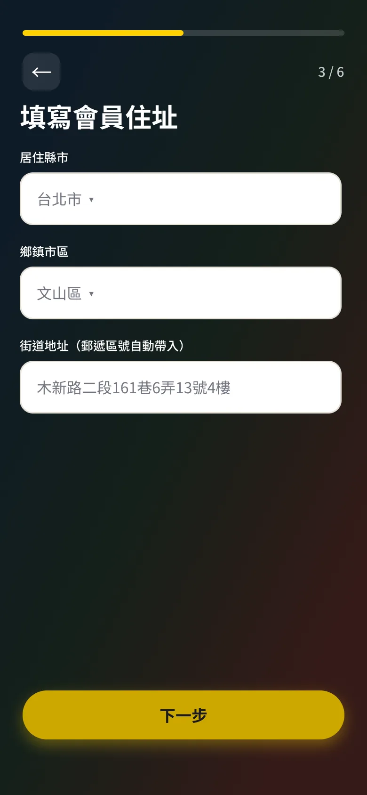
03
Delivery address
City, district, and street — the longest form, off the TV.
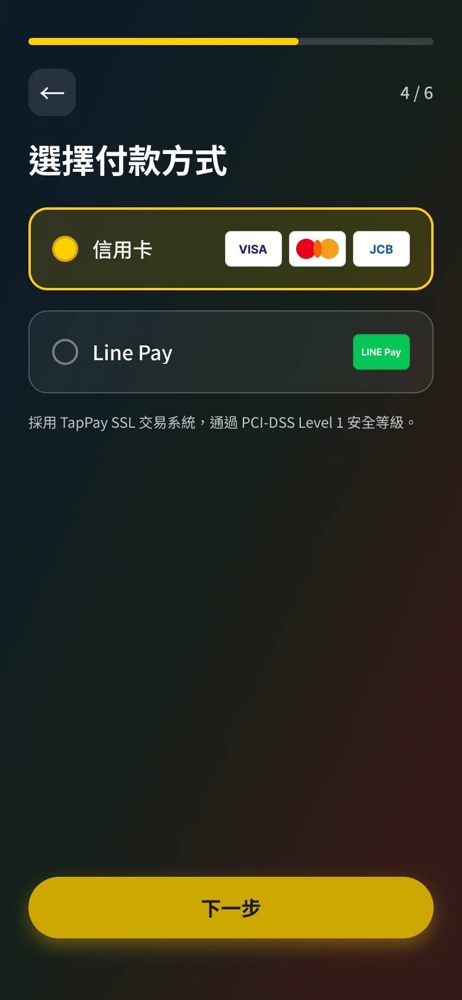
04
Payment method
Choose how to pay on a device built for tapping.
05
Card details
Card number, expiry, and CVC — or Apple Pay.
06
Order confirmation
Review the order once, then pay.
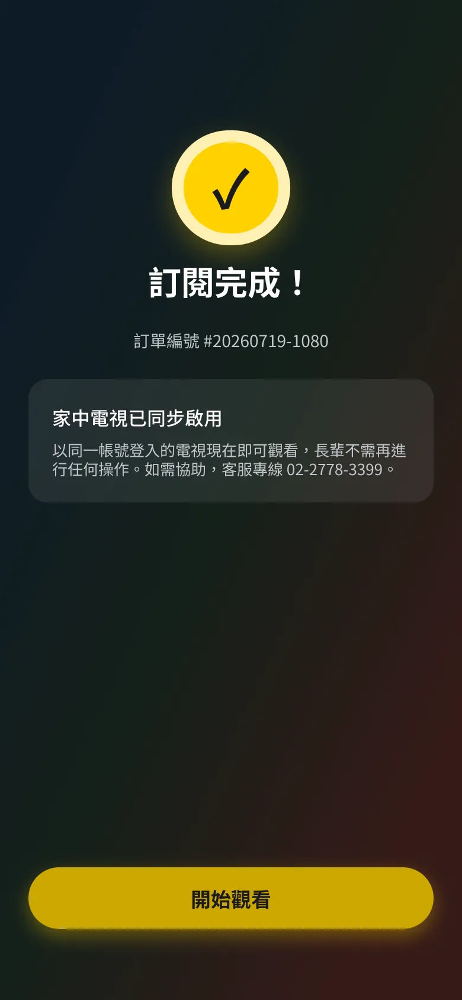
07
Subscription active
The phone is done. The television can update itself.
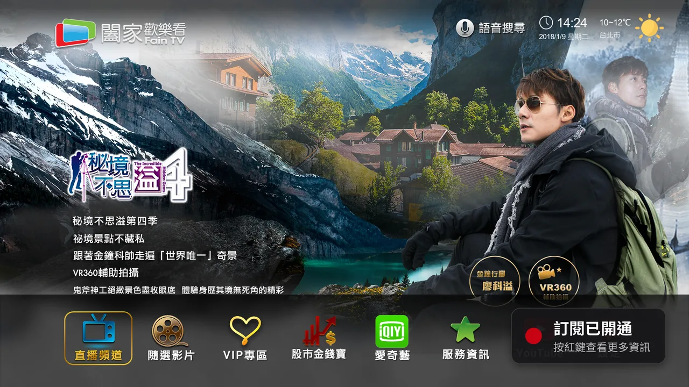
05
The TV updates itself
Subscription activates and the television reflects the change — without the viewer doing anything.
The link expires after 20 minutes. Because the two people may be hours apart, the television keeps a single button: resend. One press, no re-entry, no navigating back to the beginning.
Twelve hours of in-home observation showed the same pattern in every household: adding a product was effortless, checkout was where it stopped. Entering an address and card details on a D-pad is the longest text entry in the product, on the worst possible input device.
Five screens, more than twenty fields — every one of them entered with a D-pad.
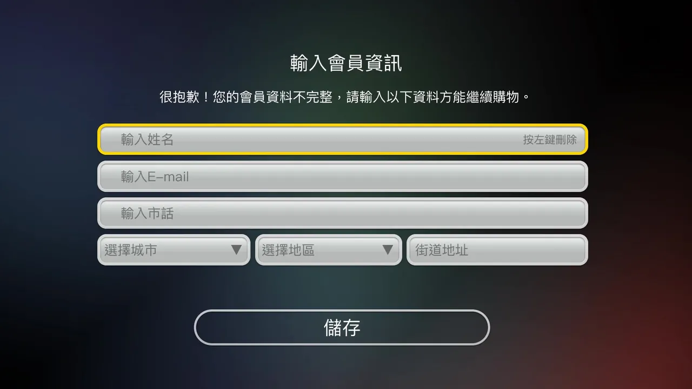
01
Member details — name, email, phone, city, district, street
02
Checkout overview — three sections, none of them filled in
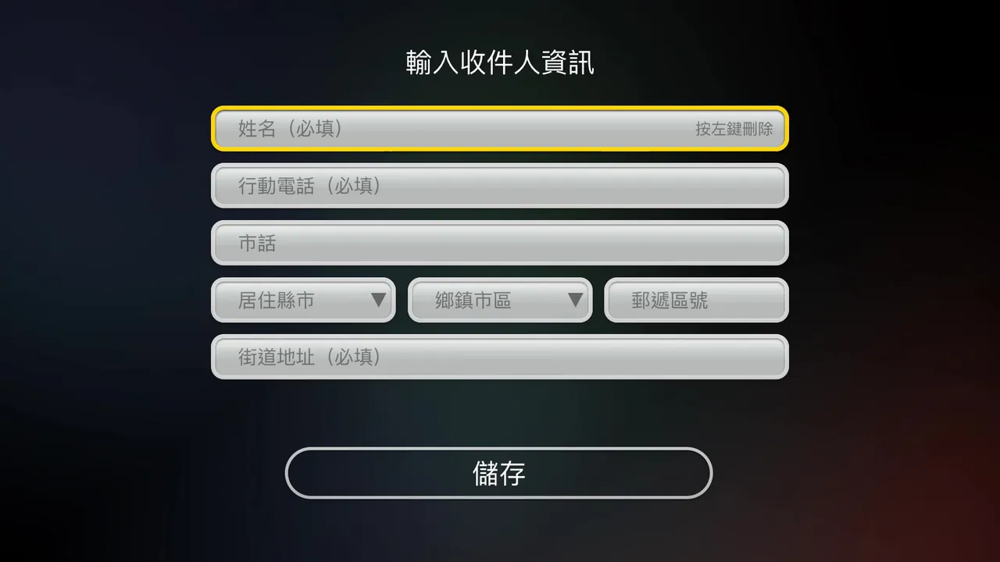
03
Recipient details — six more fields
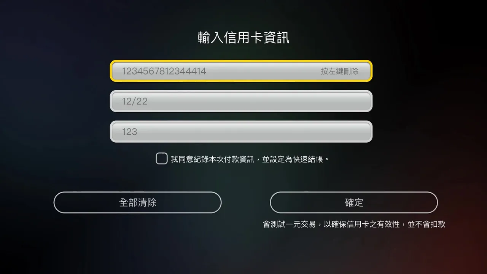
04
Card details — 16 digits, expiry, CVC
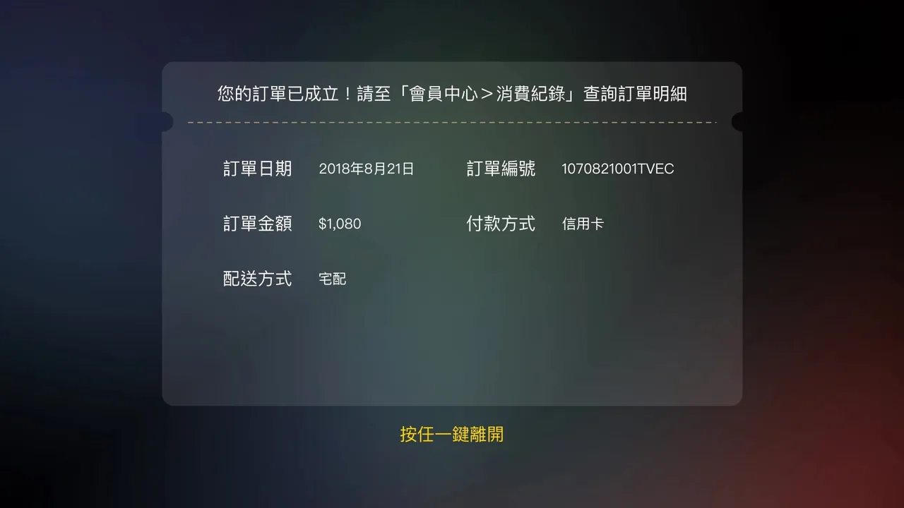
05
Order confirmed
01
Product appears during broadcast
Lightweight CTA overlay: "Press red to buy"
02
User confirms intent
Product summary + "Send to my phone"
QR code on TV, or a link sent to a phone
The critical device transition — one scan, or one message
03
Mobile opens checkout
Member data pre-filled — address and payment only
04
Complete payment on mobile
Touchscreen input, with member data already filled in
05
TV confirms success
Brief confirmation, then auto-returns to content
TV · Product CTA overlay Shipped
A lightweight product prompt during playback that doesn't interrupt viewing — one press to hand off.
TV · The handoff moment Shipped
QR code on screen + push notification sent. The critical device transition.
Mobile · Checkout
Pre-filled member data, touchscreen input.
TV · Purchase confirmed Shipped
Brief confirmation, then auto-returns to viewing. Loop closed on TV.
01 / 04
Checkout offers three routes: scan the QR code, send the link to a family member, or call customer service. The phone number is given deliberate visual weight. Observation showed that calling in an order is the existing habit for this audience — so the design preserves that route rather than forcing everyone into a digital flow.
Voice was meant to bypass typing entirely. But on a television, users have no cursor, no keyboard highlight, and no way to tell whether the system registered them at all.
Four press-and-hold durations were tested. At 1 second the trigger fired accidentally. At 3 seconds it felt right. At 5 seconds users began to assume the feature was broken. At 10 seconds they had already moved on to the next action before voice engaged — producing a delay severe enough to break the flow entirely.
A single button on the remote — no menu navigation needed
"Show me dramas with Chen Bo-lin" or simply "news"
No intermediate screens — users land on results immediately
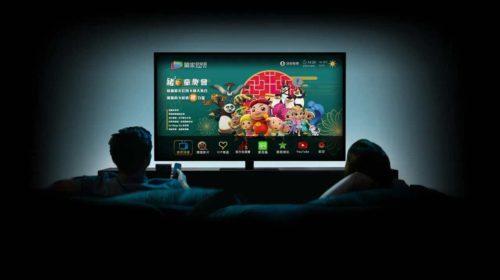
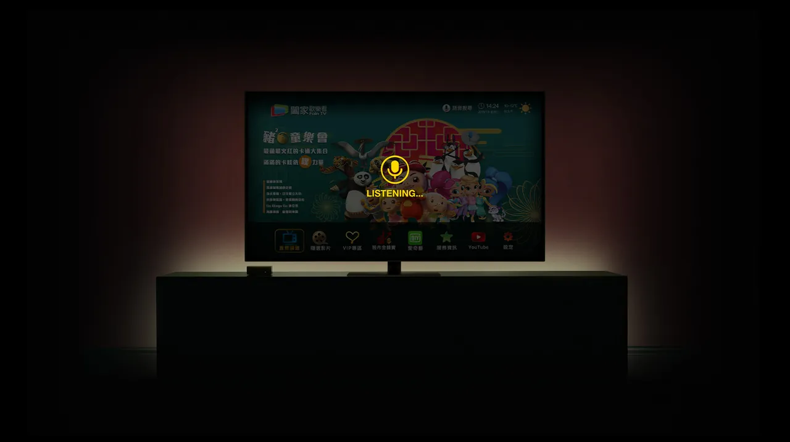
Press and hold — feel how long three seconds is
Getting the timing right was not enough. Without a visual response during the press, users had no way to confirm the system was receiving them — so animated feedback was added, restoring the sense of being in control.
Once the high-input tasks moved off the television and the cross-device handoff was validated, the redesign confirmed something simple: choosing the right device mattered more than refining the interface.
In usability testing with five participants, registering on the television took around 30 minutes on average. Moving the flow to mobile brought it down to about 5.
6
In-depth interviews
30+
Survey responses
12hrs
Hours of contextual observation in users' homes
5
Usability testing participants
Over the following two quarters, FainTV's overall subscriber base grew 50% and revenue rose 4% — alongside the launch of the company's first branded set-top box.
Designing for elderly users isn't just about making things bigger — it's about eliminating interactions that require long, sustained input. Voice should be a connector across devices, not just a search shortcut inside a single interface.
Designing the family-assistance experience on web, exploring how an emergency-help button could integrate with voice and the cross-device system, and testing a QR-led handoff for older users unfamiliar with smartphones.